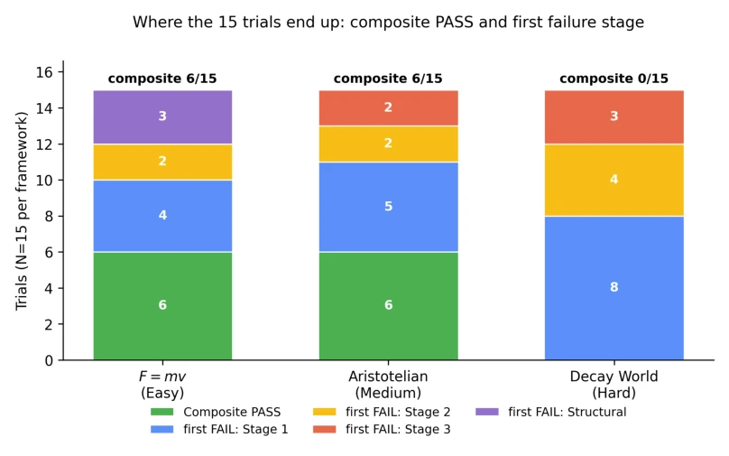

Figure 1: Four-stage protocol and evaluation pipeline. A trial runs one tested model through Stage 1 (induc- tion), Stage 2 (formulation), Stage 3 (prediction), and Stage 4 (review), with each stage in an independent API session and only the final response text of Stage k passed to Stage k + 1. Every stage output is scored by two independent LLM judges (Claude and GPT). If a round’s judge-disagreement rate exceeds 25%, the disagreement cases go to human audit for the canonical verdict (§2.4). The composite verdict requires Stage 1, Stage 2, and every Stage 3 scenario to pass, plus the structural axis where the framework applies one (§2.5). Stage 4 over-claim is reported separately as a metacognitive axis. Each framework is run on Claude Opus 4.7, GPT-5.5, and Gemini 3.1 Pro with N = 5 tria
实验Experiments
测试了 Claude Opus 4.7, GPT-5.5, Gemini 3.1 Pro 三个模型，每个框架 5 次试验。 结果：F=mv 和亚里士多德世界各 6/15 通过，Decay World 为 0/15。 发现：模型失败模式各异，Claude 弱于形式化，GPT 弱于结构，Gemini 弱于归纳。 关键发现：存在定性 - 定量不对称性，模型常方向正确但比率错误（回归标准物理）。Stage 4 审查能力极弱，2/3 含错试验中模型声称无错。 数据完全开源，包含提示词、响应和审计记录，为 LLM 评估提供了可复现的审计管道。这揭示了当前模型在跨域统一和理论自洽上的根本缺陷，表明其物理知识仍高度依赖训练数据中的标准范式。
—

Figure 2: Where the 15 trials end up in each framework: composite PASS, or the stage at which the trial first failed (Stage 1 induction, Stage 2 formulation, Stage 3 prediction, or the structural axis). Composite PASS falls across the difficulty gradient at 6/15, 6/15, 0/15. Structural-only failures appear only at F = mv. Aristotelian applies the same structural axis and passes it uniformly, while Decay does not apply the structural axis at all. The Decay World bar shows the first failing stage per trial. Its quantitative Stage 3 bottleneck is a separate cumulative pattern, reported in §5 as 14 of 15 trials failing the Stage 3 check and 23 of 60 ratio-leaked quantitative predictions.